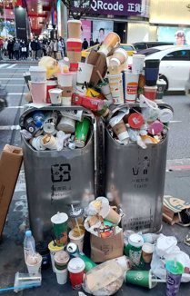
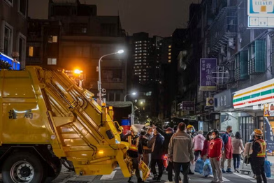
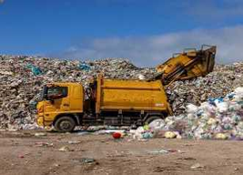

常看到人行道垃圾桶經常滿溢，不僅破壞了市容更會滋生病媒蒼蠅 蟑螂 老鼠等造成傳染病
黃色垃圾車於傍晚出巡，隨車播放《給愛麗絲》或《少女的祈禱》，
沿路收集等在路旁提著專用垃圾袋民眾手上的垃圾，這是台灣特有的家庭廢棄物清運文化
偶有新聞報導垃圾暫置場/焚化爐場各種發生的事件及衍生的問題
↑ 回到頁首
生活現況照片：



請點選上方塑膠材料"中文名稱"，查看各種塑膠特性說明暨瀏覽其他相關網頁訊息。
待續。
開始體驗